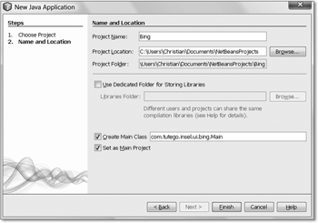
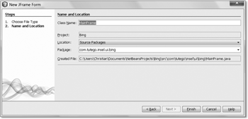
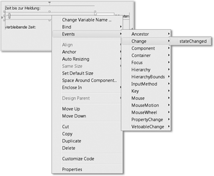

14.2 Mit NetBeans zur ersten Oberfläche
Ohne uns daher groß mit den Klassen auseinanderzusetzen, wollen wir ein erstes Beispiel programmieren und das Swing-Wissen sozusagen im Vorbeigehen mitnehmen. Das eigene Programm Bing, das im Folgenden entwickelt wird, bietet einen Schieberegler, mit der sich eine Zeit einstellen lässt, nach dem eine Meldung auf dem Bildschirm erscheint. Wer vor lauter Java immer vergisst, den Teebeutel aus der Tasse zu nehmen, für den ist diese Applikation genau richtig!
| Hinweis |
|
NetBeans nutzt keine proprietären Klassen, sodass der Programmcode 1:1 auch in ein Eclipse-Projekt kopiert werden kann und dort ohne Anpassung läuft. Auch funktioniert es problemlos, zwei Entwicklungsumgebungen, also NetBeans und Eclipse, auf einen Projektordner »loszulassen«. Am einfachsten geht das so: Erst wird ein Java-Projekt mit NetBeans angelegt. Dann wird unter Eclipse ein Java-Projekt angelegt, aber der Projektpfad auf das Verzeichnis des existierenden NetBeans-Projekt gelegts. Dann können beide IDEs gleichzeitig das gleiche Projekt verarbeiten. |
14.2.1 Projekt anlegen
Nach dem Start von NetBeans wählen wir File New Project.
Abbildung 14.2: Projekttyp in NetBeans auswählen
Anschließend wählen wir Java Application und dann Next. Den Projektnamen und Paketnamen setzen wir auf etwas Sinnvolleres, die Einstellungen könnten aber auch so bleiben:
Abbildung 14.3: Neues Java-Projekt anlegen
Nach Finish öffnet NetBeans den Editor mit der Klasse.  startet das Programm, aber ohne Funktion bleibt das langweilig.
startet das Programm, aber ohne Funktion bleibt das langweilig.
14.2.2 Eine GUI-Klasse hinzufügen
Fügen wir eine GUI-Klasse hinzu. Dazu wählen wir File New File... und im Dialog anschließend bei Swing GUI Form den Typ JFrame Form.
Abbildung 14.4: Swing-Form in das Projekt einfügen
Nach Next geben wir einen passenden Klassennamen ein:
Abbildung 14.5: Klassenname und Paket für das JFrame wählen
NetBeans erzeugt eine neue Klasse und öffnet den grafischen Editor, der auch Matisse heißt.
Abbildung 14.6: NetBeans-Oberfläche mit dem Formular und der Komponentenpalette
NetBeans zeigt in unterschiedlichen Ansichten unterschiedliche Details an. In der Mitte steht die Hauptansicht mit dem grafischen Editor. Rechts sind unter Palette die Komponenten aufgelistet, die wir per Drag & Drop auf den Formular-Designer ziehen können. Ebenfalls rechts bei Properties finden wir die Eigenschaften von Komponenten, etwa den Titel des Fensters.
Interessant an Matisse ist, dass die grafische Oberfläche direkt in Quellcode gegossen wird. Den Quellcode können wir einsehen, indem wir von Design auf Source wechseln.
Auffällig sind graue Blöcke, die geschützt sind. Der Grund ist, dass NetBeans den Quellcode aktualisiert, wann immer es über den GUI-Designer Veränderungen gibt. Den Quellcode direkt zu ändern, wäre töricht, denn so könnte NetBeans mitunter die Quellen nicht mehr einlesen, und das ganze Projekt wäre kaputt.
Abbildung 14.7: Code-Editor und geschützte Bereiche
14.2.3 Programm starten
Im Quellcode lässt sich ablesen, dass die Klasse schon eine main()-Methode hat, sodass wir MainFrame starten können. Drei Varianten bieten sich an:
- Mit
 + lässt sich direkt das Programm starten, dessen Editor offen ist. Ist es die Klasse
MainFrame, bekommen wir anschließend ein leeres Fenster.
+ lässt sich direkt das Programm starten, dessen Editor offen ist. Ist es die Klasse
MainFrame, bekommen wir anschließend ein leeres Fenster.
- In unserer eigentlichen Hauptklasse, die bei NetBeans eingetragen ist und standardmäßig
mit startet, lässt sich eine Umleitung einbauen, sodass in die dortige main()-Methode ein MainFrame.main(args); kommt.
- Die Klasse MainFrame lässt sich als Startklasse eintragen. Dazu tragen wir vom Projekt Bing im Kontextmenü Properties im Zweig Run bei Main Class statt com.tutego.insel.ui.bing.Main die Klasse com.tutego.insel.ui.bing.MainFrame ein.
Welche Variante es wird, ist für das Demo egal; Variante 2 ist nicht schlecht. Mit
springt dann ein unspektakuläres leeres Fenster auf.
Abbildung 14.8: Nach dem Start gibt es nur ein leeres Fenster.
Eine Vorschau gibt es übrigens auch. Rechts neben den Schaltflächen für Source und Design gibt es ein kleines Fenster mit Auge, das über einen Klick einen ersten Eindruck vom Design vermittelt.
14.2.4 Grafische Oberfläche aufbauen
Kommen wir zurück zum Designer. In der Palette bei Swing Controls suchen wir Label und ziehen es per Drag & Drop auf die graue Designerfläche. Bemerkenswert ist, dass Matisse vorgibt, was eine gute Position für die Beschriftung ist. Positionieren wir sie links oben, so rastet sie quasi ein.
Abbildung 14.9: Das Anordnen der Komponenten ist »magnetisch«.
Das hat zwei Konsequenzen: Zum einen ergibt sich automatisch eine gut aussehende Oberfläche mit sinnvollen Abständen, und zum anderen »kleben« die Komponenten so aneinander, dass sie bei einer Größenanpassung nicht auseinandergerissen werden.
Nachdem das Label positioniert ist, geben wir ihm einen Namen. Dazu kann rechts bei den Properties der Text verändert werden oder auch im Designer über einen Doppelklick auf den Text.
Abbildung 14.10: Eigenschaften des JLabel-Objekts
Jetzt, wo die erste Beschriftung steht, komplettieren wir die GUI. Unter der Beschriftung setzen wir einen Slider, allerdings nicht auf die ganze Breite, sondern etwa bis zur Hälfte. Unter den Properties auf der rechten Seite gibt es Eigenschaften für Minimum (0) und Maximum (100). Das Minimum 0 erhöhen wir auf 1 und das Maximum auf 1.440 (24 Stunden sollten reichen).

Abbildung 14.11: Eigenschaften des JSlider-Objekts
Rechts vom Slider setzen wir ein Text Field und wiederum rechts davon ein neues Label. Das Label hängt am rechten Fensterrand, und wir beschriften es mit Minuten. Den Inhalt des Textfeldes (jTextField1) löschen wir mit einem Doppelklick in die Textbox (oder rechts bei den Properties unter Text). Die Textbox wird dann klein, doch wir können sie etwas größer ziehen. Anschließend wird die Textbox rechts an das Minuten-Label und der Slider rechts an die Textbox gesetzt, sodass alle drei gut ausgerichtet sind. Bei einem Klick auf das magische Auge sollte die Vorschau so aussehen:
Abbildung 14.12: Anwendung jetzt mit Schieberegler und Textfeld
Das Schöne an den automatischen Ausrichtungen ist, dass wir die Breite verändern können und die Komponenten alle mitlaufen, also nicht absolut positioniert sind; so sollte eine grafische Oberfläche sein!
Die Oberfläche ist jetzt schon fast fertig. Geben wir noch zwei Labels und zwei Schaltflächen hinzu.
Abbildung 14.13: Vollständige Anwendung
Zwei Labels nebeneinander (das zweite enthält nur ein Leerzeichen) stehen unter dem Slider. Startet später die Anwendung, soll im jetzt unsichtbaren Label die Restzeit eingeblendet werden. Die Schaltflächen sind bei den Swing Controls als Button aufgeführt. Zwei soll es geben: eine zum Starten der Applikation und eine zum Beenden. Über den Property-Editor geben wir gleichzeitig noch dem Fenster einen Titel (BING), und fertig ist die Oberfläche.
14.2.5 Swing-Komponenten-Klassen
Die Oberfläche ist jetzt fertig, und in der Ansicht Source lässt sich ablesen, dass viel Quellcode für die Ausrichtung erstellt wurde. Der Quellcode gliedert sich in folgende Teile:
- einen Standardkonstruktor: Er ruft initComponents() auf. Eigene Funktionalität können wir hier hinzuschreiben.
- die Methode initComponents(): Sie ist geschützt und initialisiert die Komponenten und setzt sie auf den JFrame.
- Die statische main()-Methode könnte das Fenster gleich starten, denn sie baut ein Exemplar der eigenen Klasse, die ja Unterklasse von JFrame ist, auf und zeigt es mit setVisible(true) an.
- Am Ende finden sich die Komponenten. Es sind Objektvariablen, sodass jede Objektmethode auf sie Zugriff hat. Sie sehen etwa so aus:
// Variables declaration – do not modify
private javax.swing.JButton jButton1;
private javax.swing.JButton jButton2;
private javax.swing.JLabel jLabel1;
private javax.swing.JLabel jLabel2;
private javax.swing.JLabel jLabel3;
private javax.swing.JLabel jLabel4;
private javax.swing.JSlider jSlider1;
private javax.swing.JTextField jTextField1;
// End of variables declaration
Es lässt sich ablesen, dass für Schaltflächen die Klasse JButton, für Beschriftungen die Klasse JLabel, für den Slider ein JSlider und für einfache Textfelder die Klasse JTextField zum Einsatz kommen.
Variablen umbenennen
Die Variablen sind standardmäßig privat und nichtssagend benannt. Wir wollen die Variablennamen ändern, sodass klarer wird, was welche Komponenten sind. Jetzt kommt auf der linken Seite der Navigator/Inspector ins Spiel. Er zeigt die hierarchische Struktur der Komponenten an. Mit der Taste lässt sich jeder Variablenname ändern. Das wollen wir machen.
Abbildung 14.14: Umbenennung der Variablen im Komponentenbaum
In der Quellcodeansicht sind die Komponenten jetzt besser unterscheidbar:
// Variables declaration – do not modify
private javax.swing.JButton exitButton;
private javax.swing.JLabel minutesLabel;
private javax.swing.JSlider minutesSlider;
private javax.swing.JTextField minutesTextField;
private javax.swing.JLabel remainingLabel;
private javax.swing.JLabel remainingMinLabel;
private javax.swing.JButton startButton;
private javax.swing.JLabel timeToMsgLabel;
// End of variables declaration
Da wir im Konstruktor auf die Elemente Zugriff haben, wollen wir nach dem Aufruf von initComponents() die Schiebereglerposition auf 1 setzen und das Textfeld ebenfalls mit 1 vorbelegen:
/** Creates new form MainFrame */
public MainFrame() {
initComponents();
minutesSlider.setValue( 1 );
minutesTextField.setText( "1" );
}
Die Methode setValue() erwartet einen numerischen Wert für den Slider, und setText()erwartet einen String für das Textfeld.
14.2.6 Funktionalität geben
Nachdem die Variablen gut benannt sind, soll es an die Implementierung der Funktionalität gehen. Folgendes gilt es zu realisieren:
- Das Aktivieren der Schaltfläche Beenden beendet das Programm.
- Das Bewegen des Sliders aktualisiert das Textfeld.
- Das Verändern des Textfeldes aktualisiert den Slider.
- Nach dem Start läuft das Programm, und die verbleibende Zeit wird aktualisiert. Ist die Zeit um, erscheint eine Dialogbox.
Der erste Punkt ist am einfachsten: Beginnen wir dort.
Applikation beenden
Nötig für Interaktionen sind die sogenannten Listener, die auf Benutzerinteraktionen reagieren. Wenn etwa auf die Schaltfläche Beenden geklickt wird, muss es einen Listener geben, der das Klick-Ereignis mitbekommt und reagiert.
Für Schaltflächen gibt es eine einfache Möglichkeit, einen Listener hinzuzufügen: Wir doppelklicken im Designer schnell auf die Schaltfläche. Machen wir das für Beenden: NetBeans wechselt dann von der Design-Ansicht in den Quellcode und hat eine neue Methode hinzugefügt – in ihr setzen wir System.exit(0); ein, sodass sich Folgendes ergibt:
private void exitButtonActionPerformed(java.awt.event.ActionEvent evt) {
System.exit( 0 );
}
Nur der Rumpf der Methode ist editierbar. Wer versehentlich einen Doppelklick gesetzt hat, kann ein Undo in der Design-Ansicht durchführen.
Ein Programmstart über zeigt schließlich, dass die Applikation mit einem Klick auf Beenden auch tatsächlich beendet wird.
Sliderwert und Textfeld synchronisieren
Als Nächstes halten wir den Sliderwert und den Wert im Textfeld synchron. Zurück in der Design-Ansicht selektieren wir den Slider und finden im Kontextmenü den Menüpunkt Events. Das sind alle Ereignisse, die der Slider auslösen kann. Wir interessieren uns für Change.
Abbildung 14.15: Im Formulardesigner einen Ereignisbehandler hinzufügen
Nach dem Aktivieren des Menüpunkts bekommen wir von NetBeans wieder Quellcode generiert. Die Listener-Methode wird immer dann aufgerufen, wenn der Slider vom Benutzer bewegt wird. Lesen wir einfach den aktuellen Wert aus, und schreiben wir ihn in das Textfeld:
private void minutesSliderStateChanged(javax.swing.event.ChangeEvent evt) {
minutesTextField.setText( "" + minutesSlider.getValue() );
}
Die JSlider-Methode getValue() liefert also den aktuell eingestellten Wert, und setText() vom JTextField setzt einen String in die Textzeile.
Nach dem Start des Programms können wir den Slider bewegen, und im Textfeld steht die ausgewählte Zahl.
Jetzt der umgekehrte Fall: Wenn das Textfeld mit  bestätigt wird, soll der Wert ausgelesen und damit die JSlider-Position gesetzt werden. Doppelklicken wir im Designer auf das Textfeld, dann wird
wieder der passende Listener in den Quellcode eingefügt. Füllen wir ihn wie folgt:
bestätigt wird, soll der Wert ausgelesen und damit die JSlider-Position gesetzt werden. Doppelklicken wir im Designer auf das Textfeld, dann wird
wieder der passende Listener in den Quellcode eingefügt. Füllen wir ihn wie folgt:
private void minutesTextFieldActionPerformed(java.awt.event.ActionEvent evt) {
try {
minutesSlider.setValue( Integer.parseInt( minutesTextField.getText() ) );
}
catch ( NumberFormatException e ) { }
}
Da im Textfeld ja fälschlicherweise Nicht-Zahlen stehen können, fangen wir den Fehler ab, ignorieren ihn aber.
Nachdem jetzt Änderungen im Textfeld und Slider synchron gehalten werden, ist es an der Zeit, die Implementierung mit dem Start eines Timers abzuschließen.
Timer starten
In der Ansicht Designer doppelklicken wir auf die Schaltfläche Start. Jetzt muss die aktuelle Wartezeit ausgelesen werden, nach deren Ende eine Dialogbox erscheint. Die konstante Abarbeitung übernimmt ein Swing-Timer (javax.swing.Timer), der alle 100 Millisekunden die Oberfläche aktualisiert und dann beendet wird, wenn die Wartezeit abgelaufen ist:
private void startButtonActionPerformed(java.awt.event.ActionEvent evt) {
startButton.setEnabled( false );
final long start = System.currentTimeMillis();
final long end = start + minutesSlider.getValue() * 60 * 1000;
final javax.swing.Timer timer = new javax.swing.Timer( 100, null );
timer.addActionListener( new ActionListener() {
public void actionPerformed( ActionEvent e ) {
long now = System.currentTimeMillis();
if ( now >= end )
{
remainingMinLabel.setText( "" );
startButton.setEnabled( true );
JOptionPane.showMessageDialog( null, "BING!" );
timer.stop();
}
else
remainingMinLabel.setText( (end – now) / 1000 + " Sekunden" );
}
} );
timer.start();
}
Und das Programm ist fertig.
Abbildung 14.16: Die Anwendung in Aktion
Ihr Kommentar
Wie hat Ihnen das <openbook> gefallen? Wir freuen uns immer über Ihre freundlichen und kritischen Rückmeldungen.
 Jetzt bestellen
Jetzt bestellen


{kind=link}
{kind=link}
{kind=link}
{kind=link}
{kind=link}
{kind=link}
{kind=link}
{kind=link}
{kind=link}
{kind=link}
{kind=link}
{kind=link}
{kind=link}
{kind=link}